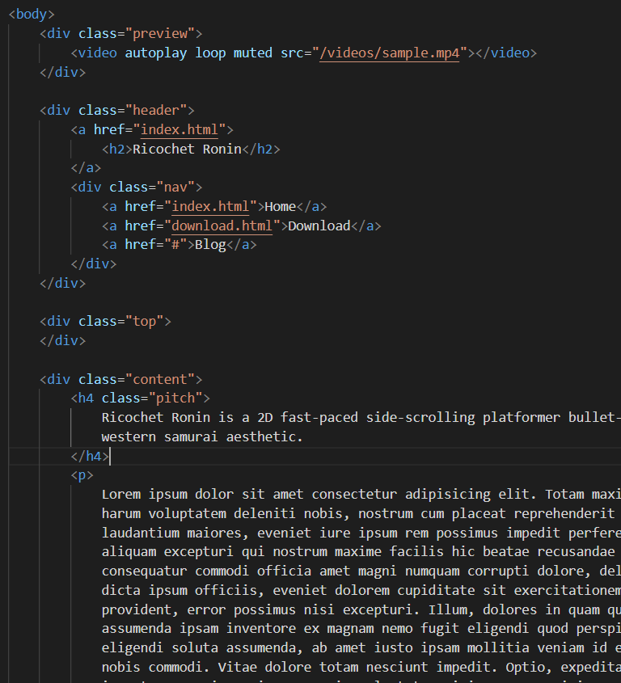
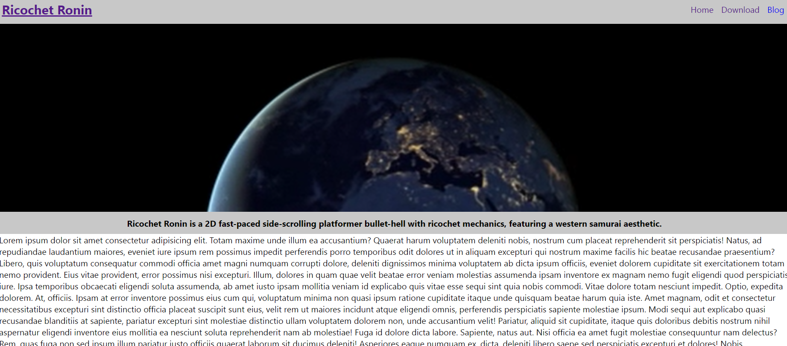

Weekly PPJ Entries for Ricochet Ronin
Worked on the team wesbite.
Set it up using Github Pages and simple html and css.
Setup a simple landing page with area for game trailer, elevator pitch and further description.
Made page for downloads and setup the potential for a blog.
(3.5hrs)


Met with the team to discuss vision and deliverables.
(1.5 hrs)
The team worked well getting the foundations setup for the team to work well in future weeks. Everyone has a role and its starting to get a feel for a unified vision.
I was at a retreat this weekend so I was unable to accomplish as much as I would have liked for the team. I look forward to catching up with the team and getting to dig into production this next week.
Finish foundational website development and setup pipline for blogs to be easily uploaded to the
site.
Work with programmers and developers to build onto tech demo.
Potentially look at tech art needed for the project.
Coding, Development, Website, Week 1, Joshua Pelkington